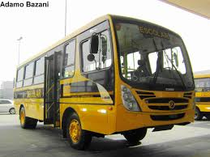

Crianças do Campo em Busca de Conhecimento: A Jornada para a Cidade A vida no campo tem seu próprio ritmo, marcado pela tranquilidade da natureza e pela rotina simples do trabalho rural. Para muitas crianças que crescem em áreas rurais, a vida é uma sequência de tarefas diárias e brincadeiras ao ar livre, longe dos estímulos urbanos. No entanto, a busca por uma educação de qualidade muitas vezes leva essas crianças a uma jornada transformadora: a ida para a cidade para estudar. Para essas crianças, a chegada à cidade representa mais do que uma simples mudança de cenário; é uma imersão em um mundo completamente diferente. As ruas movimentadas, os edifícios altos e o barulho constante contrastam fortemente com o ambiente calmo e espaçoso ao qual estão acostumadas. Cada aspecto da vida urbana é uma novidade: desde a complexidade do transporte público até as diversas opções de entretenimento e consumo. O motivo principal para essa mudança é a busca por melhores oportunidades educacionais. As escolas na cidade frequentemente oferecem recursos que as escolas rurais podem não ter, como laboratórios bem equipados, bibliotecas vastas e uma variedade de atividades extracurriculares. Para muitas crianças do campo, estudar na cidade é uma chance de ampliar seus horizontes e sonhar com futuros que antes pareciam distantes. Entretanto, a adaptação não é sempre fácil. A separação da família e do lar pode ser difícil, e a nova rotina pode ser desafiadora. A saudade do campo, dos amigos e das atividades que preenchiam seus dias pode ser intensa. Além disso, enfrentar as diferenças culturais e sociais pode ser um desafio adicional. As crianças precisam se ajustar a novos padrões de comportamento, lidar com uma maior diversidade e, muitas vezes, superar barreiras de comunicação. Apesar dessas dificuldades, a experiência na cidade pode ser extremamente enriquecedora. A convivência com crianças de diferentes origens e a exposição a novas ideias e perspectivas contribuem para um crescimento pessoal significativo. A educação adquirida em um ambiente urbano pode abrir portas para oportunidades que antes pareciam inatingíveis. A jornada das crianças do campo em direção à cidade é um reflexo de uma busca universal por conhecimento e progresso. Essa experiência não apenas molda o futuro dessas crianças, mas também enriquece a cidade com a diversidade e a perspectiva que elas trazem. Ao final, essa troca entre o campo e a cidade é uma demonstração poderosa de como a educação pode conectar mundos diferentes e criar novos caminhos para o futuro.